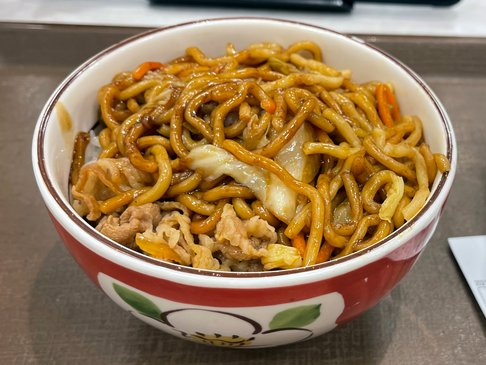

Yakisoba
Home

Description
Chicken Yakisoba is a classic Japanese-inspired stir-fry that perfectly balances savory and spicy flavors.
It’s a delicious and complete meal that brings the taste of Asian street food to your table.
Ingredients
- ½ teaspoon sesame oil
- 1 tablespoon canola oil
- 2 tablespoons chile paste
- 2 cloves garlic, chopped
- 4 skinless, boneless chicken breast halves - cut into 1 inch cubes
- ½ cup soy sauce
- 1 onion, sliced lengthwise into eighths
- ½ medium head cabbage, coarsely chopped
- 2 carrots, coarsely chopped
- 8 ounces soba noodles, cooked and drained
Steps
- Infuse the oil: In a large skillet, combine the sesame oil, canola oil, and chili paste. Stir-fry for about 30 seconds to release the flavors.
- Sauté the garlic: Add the chopped garlic and stir-fry for another 30 seconds until fragrant.
- Cook the chicken: Add the chicken cubes and 1/4 cup of soy sauce. Stir-fry for about 5 minutes, or until the chicken is no longer pink. Remove the mixture from the pan and set it aside in a warm place.
- Stir-fry the vegetables: In the same pan, add the onion, cabbage, and carrots. Stir-fry for 2 to 3 minutes until the cabbage begins to wilt but remains slightly crisp.
- Combine everything: Stir in the remaining soy sauce, the cooked soba noodles, and the reserved chicken mixture.
- Toss and serve: Mix everything thoroughly until well blended and heated through. Serve immediately.